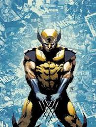

Caractéristique
- Type: Equipe
- Chef:Charles Xavier/Professor X
- Origines des Pouvoirs: Mutation
- Création : Septembre 1963
- Créateur : Stan lee
Présentation
Dans l'univers Marvel, les mutations génétiques octroient des super-pouvoirs à une part croissante de la population. Ces qualités surhumaines se dévoilent en général à l’adolescence, moment critique pendant lequel les mutants peuvent sombrer dans le doute et l’égarement ou au contraire arriver à maîtriser leurs dons et s'épanouir.
Afin de les aider à franchir ce moment difficile, le professeur Charles Xavier a créé une école spécialisée, l'Institut Xavier où il forme les mutants qu'il a réussit à découvrir à utiliser leurs pouvoirs pour le bien et à s’accepter eux-mêmes. Il leur apprend également à vivre en harmonie avec les humains « normaux ». Sous la couverture d'un institut privé d'enseignement (jusqu'en 2000, quand Xavier a été exposé publiquement comme étant un mutant ; ensuite, l'établissement est notoirement connu comme un internat pour mutants), l'Institut Xavier forme l'équipe des X-Men à affronter les périls du monde.
Mais d’autres mutants, qui n’ont pas eu la chance de rencontrer le professeur Xavier — ou qui l'ont rejeté — se sont égarés sur la voie du mal. Regroupés parfois autour de Magnéto, ils n’ont pour but que d’affirmer la prééminence de leur race en réduisant l’humanité en esclavage. Sur cet argument, les auteurs de la série ont créé une multiplicité de mutants aux pouvoirs variés dont les affrontements, sans cesse renouvelés, ont assuré le succès de la série depuis une quarantaine d’années.
Se pose ainsi le problème du rapport de l'homme à son évolution et de l'intégration des différences. Les mutants se répartissent en deux groupes : ceux qui sont proches du professeur Charles Xavier, croyant que la différence est un avantage, aux bénéfice du métissage des capacités ; et ceux qui sont proches de Magnéto, se considèrant comme le stade avancé de l'Homo sapiens et, à ce titre, qui considèrent que ce dernier est condamné à disparaître car il ralentit l'émergence d'une nouvelle humanité (l’Homo superior, c'est-à-dire les mutants).
Principaux membres
| Professor X | Cyclops | Iceman | Marvel Girl | Beast |
|  | ||||
| Angel | Wolverine | Rogue | Storm | Gambit |